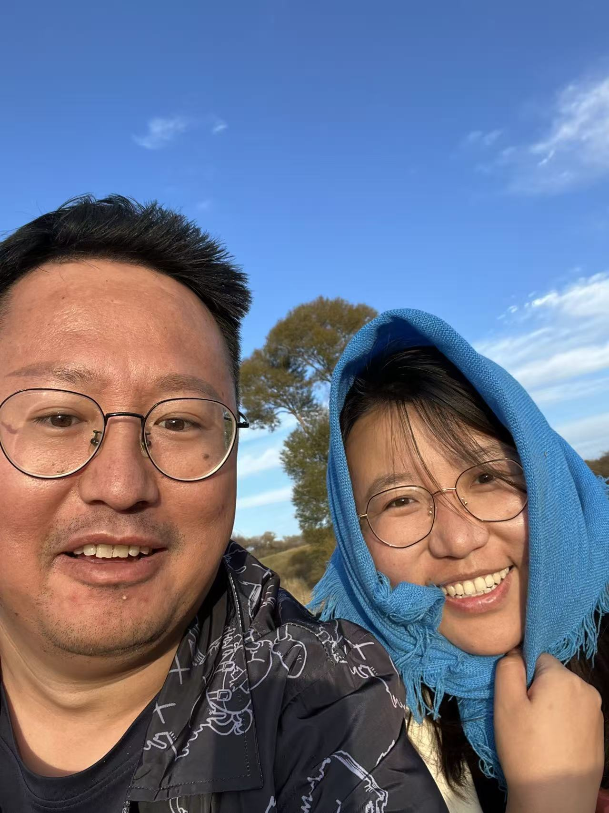

2026.05.20
有些瞬间，
不用说太满。
我只是想把这张照片，好好递给你。那天的风、天空和笑起来的样子，我都想认真保存。

那天风很好，天空也干净。后来我想起这张照片，觉得喜欢一个人也可以这么简单：看见你笑，就想把这一秒留久一点。
音乐会在打开时轻轻进来。
2026.05.20
我只是想把这张照片，好好递给你。那天的风、天空和笑起来的样子，我都想认真保存。

那天风很好，天空也干净。后来我想起这张照片，觉得喜欢一个人也可以这么简单：看见你笑，就想把这一秒留久一点。